Los estetas del partido ya tenían experiencia en ello porque lo mismo habían hecho antes con Angel Colom , que pasó de los vaqueros y barba desaliñada a su cuidado aspecto actual.
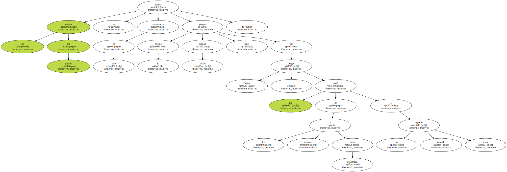Atrás había quedado una etapa de la vida de Pilar caracterizada por el trabajo constante y que la llevó de militar en la CNT - " pero cuando era muy joven , - eh ? , porque fui de la última generación antifranquista y no bebí en las fuentes comunistas sino en las anarquistas " , dice - a ser considerada la musa ideológica del pujolismo por excelencia.
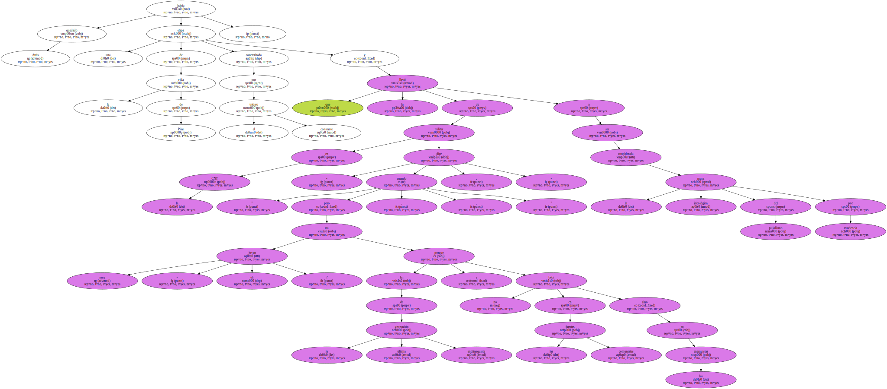Pero de ahí pasó en un suspiro a la independentista ERC que dirige Angel Colom.
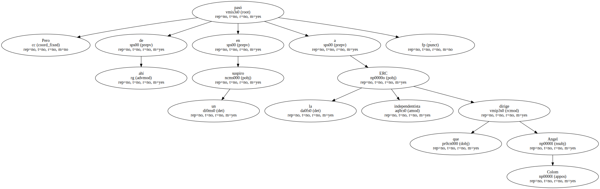" Ella , como otros siempre había militado en el nacionalismo genérico y hubiese podido decantarse tanto por un nacionalismo socialista como por uno más cercano a IC o a Convergencia . , Se había instalado en este común denominador que luego decidió cambiar a una cosa más concreta . Y escogió ERC " , señala Vicenç Villatoro , escritor , actual director del diario Avui y amigo de la diputada.
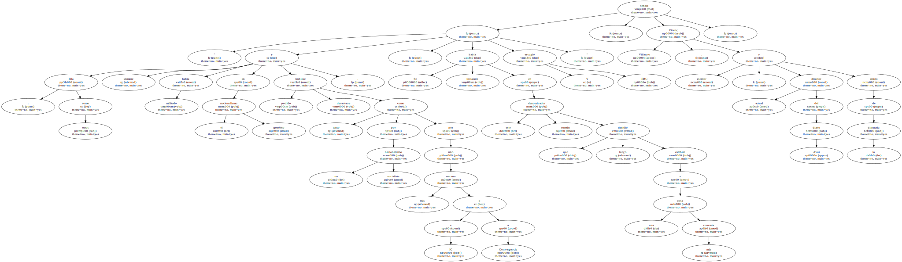Licenciada en Filología Hispánica y Catalana , Pilar Rahola ha estado en las últimas semanas en el ojo del huracán informativo.
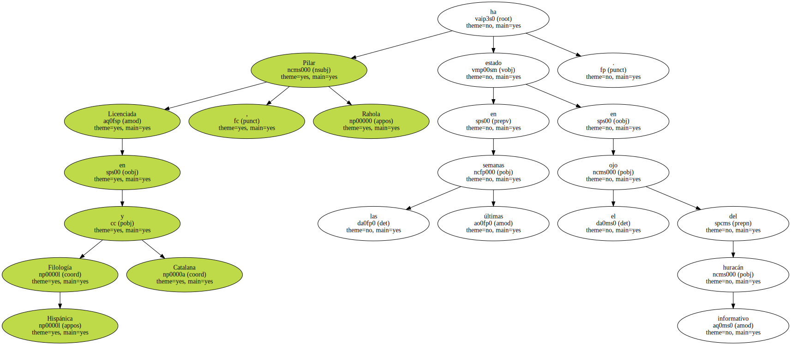Ha robado protagonismo a sus compañeros de escaño y de comisiones.
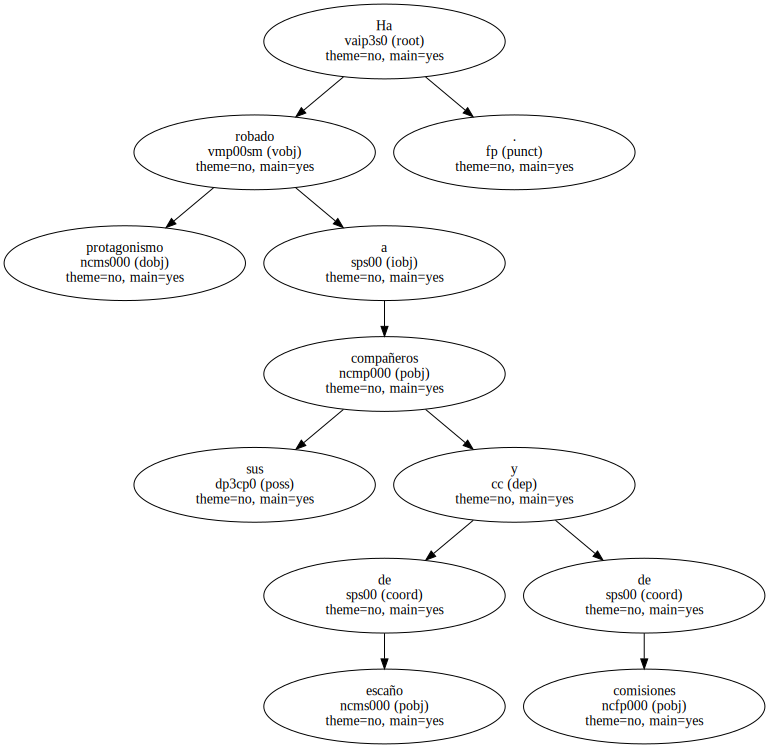Y ha robado protagonismo sobre todo al hasta ahora omnipresente Miquel Roca , el único catalán con un peso específico en las esferas de la política estatal.
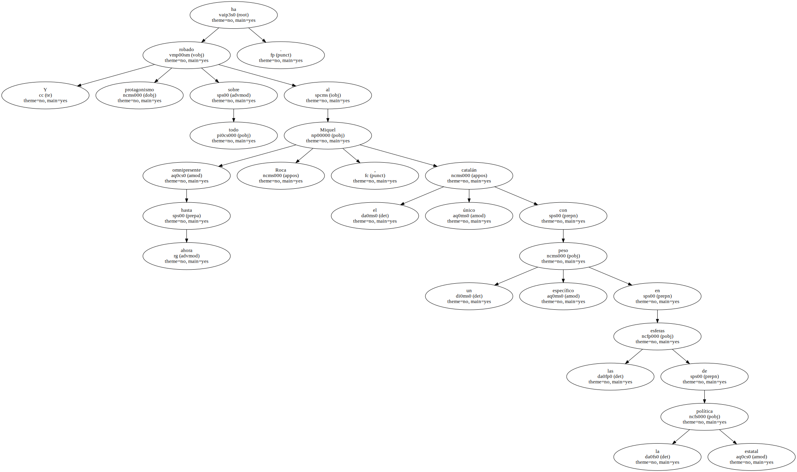" Aquí ha habido una mentira que se ha fomentado durante años : se ha hecho creer que los catalanes son Miquel Roca y sus muchachos " , señala Miquel Sellarés , ex director general de la Policía Autonómica de Cataluña.
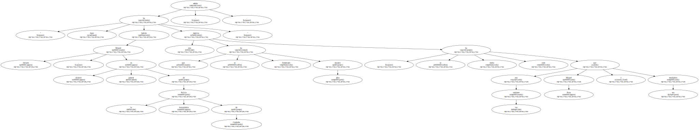Quizá porque ha restado protagonismo a CiU es por lo que se comenta en ciertos sectores el poco aprecio que le tiene Roca , a pesar de que Pilar se lleva bien con otros nacionalistas.
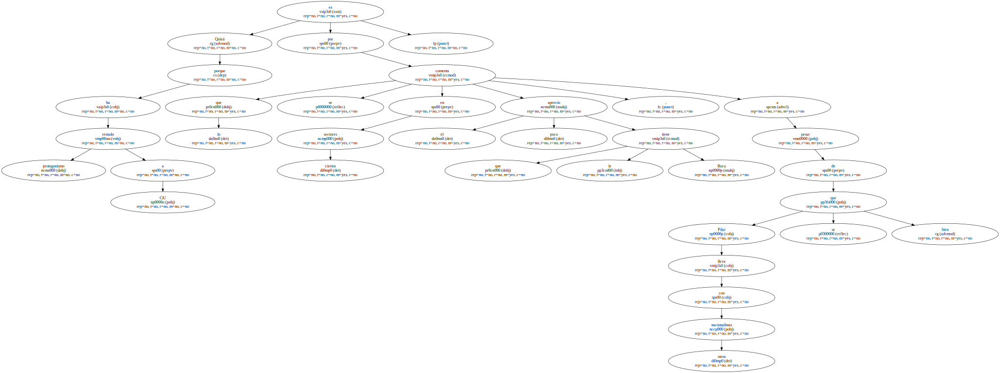Su independentismo no le ha supuesto un problema personal.
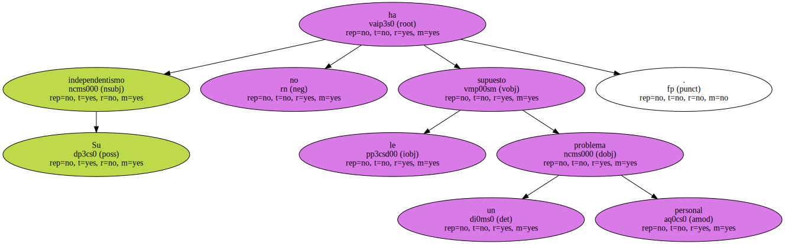Casada con un andaluz de Jaén , Joan Andreu , tiene una hija de 13 años y un primo guardia civil.
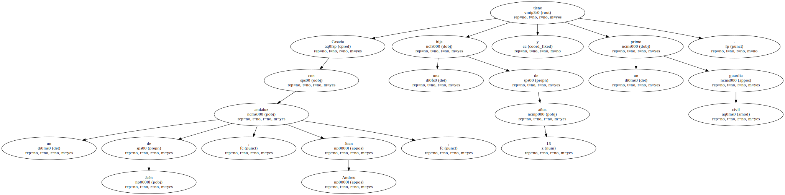Su marido , un pequeño empresario del sector informático , habla perfectamente el catalán y apoya las tesis políticas de Pilar.
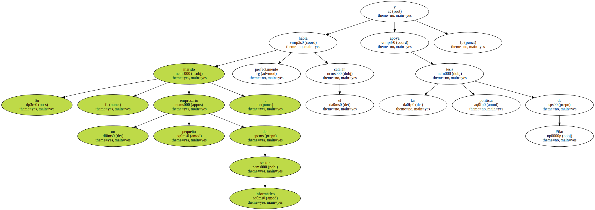Tras el nacimiento de su hija , tuvo que someterse a una operación que le impidió ser madre de nuevo , por lo que ha adoptado un niño , Noé.
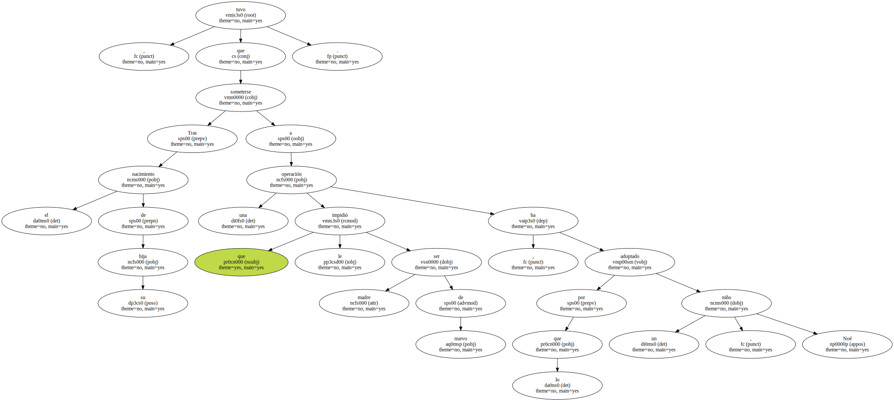Pero la dedicación a la política no la ha apartado de los suyos.
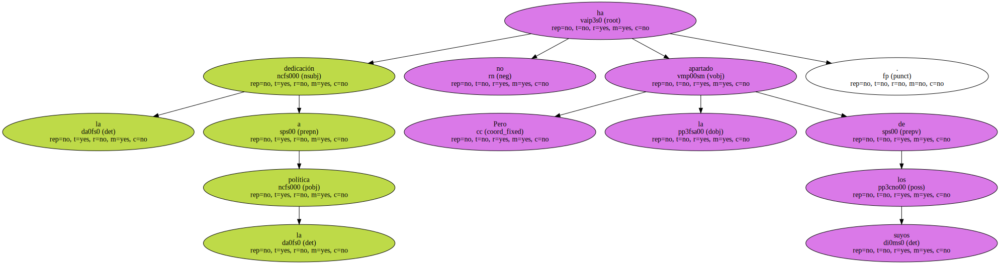Sigue siendo una nacionalista del cinturón industrial barcelonés.

Vive en Badalona y sigue siendo una gran amante de los animales - tiene en su casa trece gatos y dos perros -.